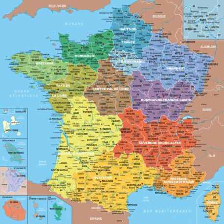
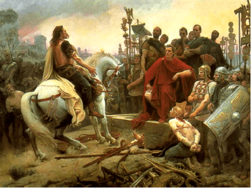

Ce projet me tient à coeur pour deux raisons tout d'abord car j'ai depuis presque toujours une passion pour l'Histoire plus particulièrement du XVIIème au XXème siècle, et secondement pour le plaisir de faire partager ma passion à mes élèves afin qu'ils s'intéressent eux aussi à l'Histoire. Même si au premier abord il n'y à pas beaucoup de débouchés possibles le domaine de l'Histoire est vaste et permet plusieurs niveaux d'enseignement. 
Cette spécialité est évidemment indispensable dans le domaine de l'enseignement de l'Histoire, cela me permettrait d'approfondir mes connaissances et me conforter dans l'idée de me diriger vers une FAC d'Histoire. La géopolitique est très importante pour comprendre notre monde. Les enseignements fournis dans cette spécialité sont indispensables pour la suite de mes études.
Bien que ce soit loin d'être ma période favorite l'Antiquité présente des civilisations qui sont les bases de notre monde actuel, si l'époque ne me plaît que très peu j'apprécie néanmoins la cutlure, notament pour ce qui est de la mythologie, et la langue car si le latin n'est plus que très peu parlé et utile aujourd'hui il reste à la base de la langue française. 
J'ai le projet de partir en FAC d'Histoire à Paris ou à Pau, après avoir obtenu le BAC+5 nécessaire à la poursuite de mes études, afin de passer un master puis de réussir le CAPES pour pouvoir devenir enseignant et par la suite obtenir une agrégation. Après ça j'envisage de me diriger vers l'écriture.